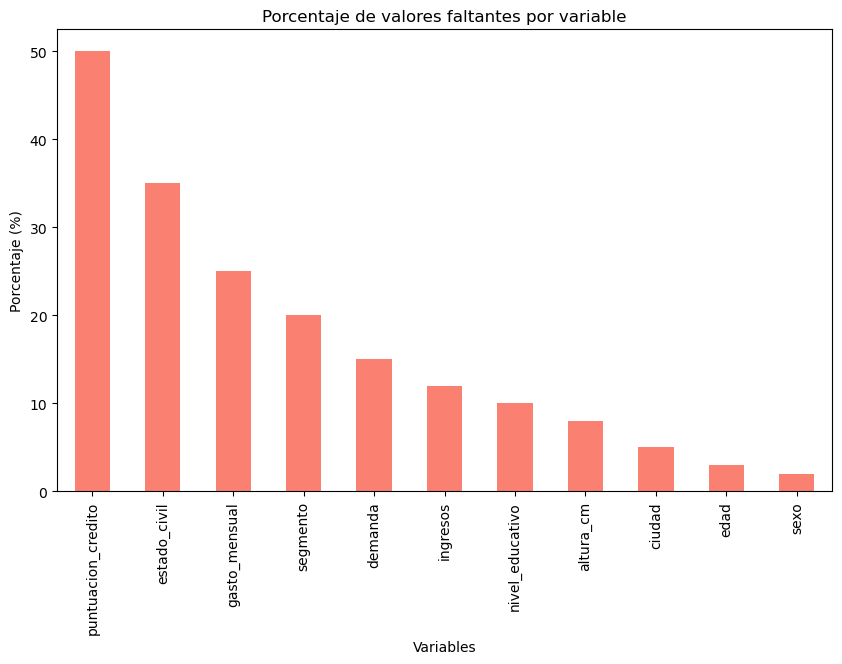
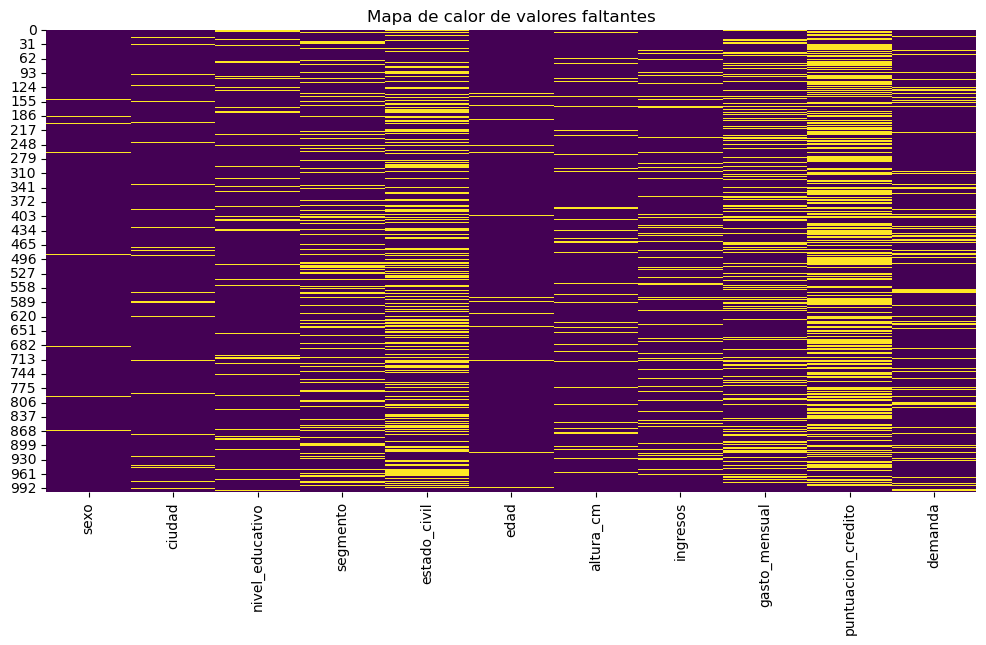
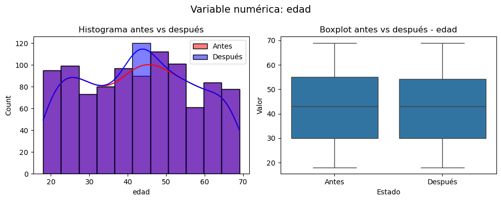
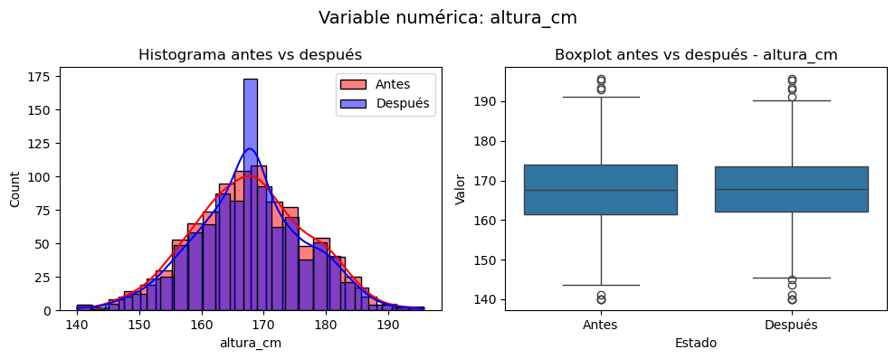
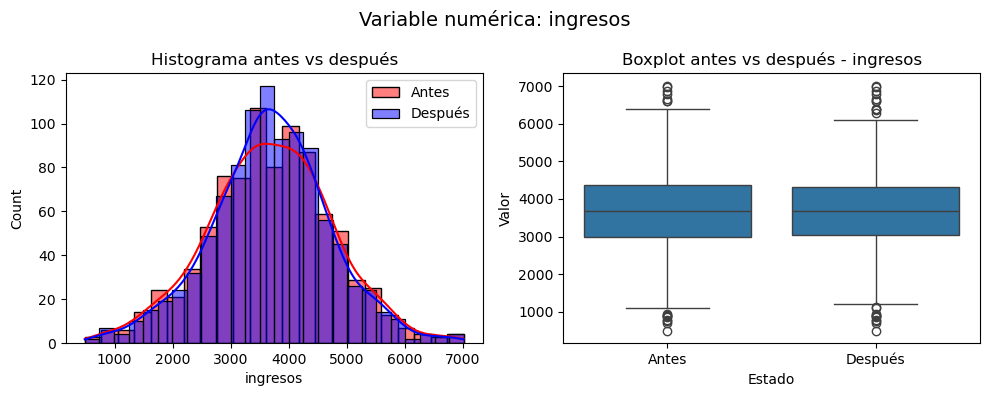
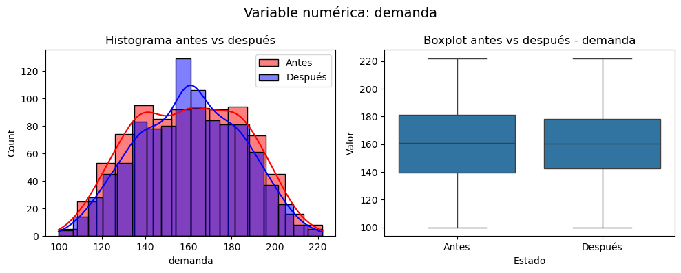
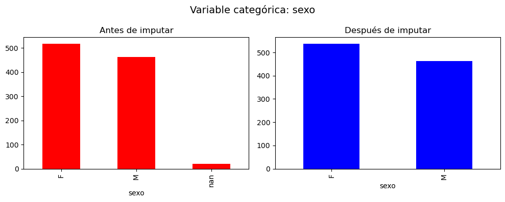
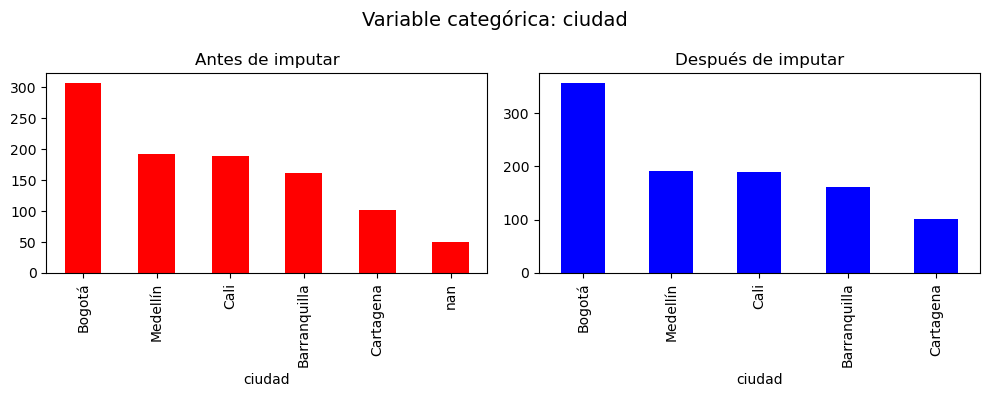
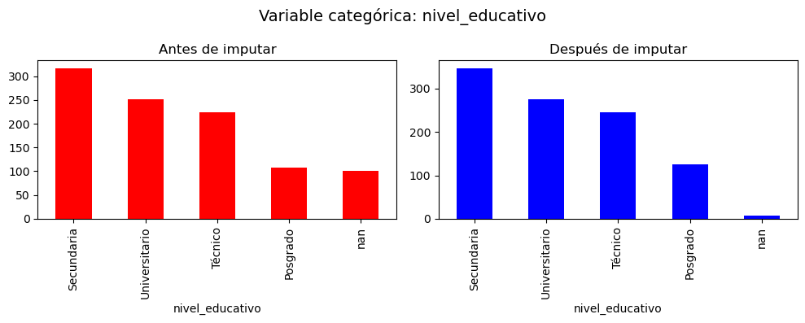
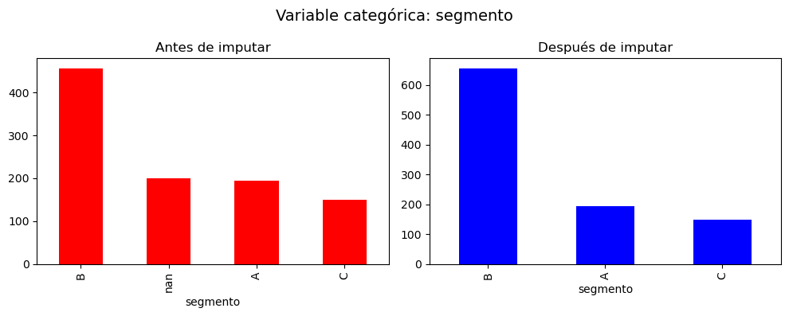

Taller de Imputación de Datos#
Este notebook desarrolla el taller final de imputacion, usando la base base_imputacion_mixta_1000.csv.
Se siguen las instrucciones: exploración de nulos, clasificación MCAR/MAR/MNAR (heurística), aplicación de métodos de imputación (mediana/moda, KNN, MICE, por grupo), y construcción de tabla resumen.
Exploracion inicial#
import matplotlib.pyplot as plt
import pandas as pd
import seaborn as sns
import numpy as np
import warnings
warnings.filterwarnings("ignore")
# Cargar datos locales
url = "https://raw.githubusercontent.com/Kalbam/Datos/refs/heads/main/base_imputacion_mixta_1000.csv"
df = pd.read_csv(url)
df.head()
| fecha | sexo | ciudad | nivel_educativo | segmento | estado_civil | edad | altura_cm | ingresos | gasto_mensual | puntuacion_credito | demanda | |
|---|---|---|---|---|---|---|---|---|---|---|---|---|
| 0 | 2024-01-01 | F | Medellín | NaN | B | Unión libre | 19.0 | 161.821754 | 3574.753806 | 1832.731832 | 640.465372 | 119.202995 |
| 1 | 2024-01-02 | F | Barranquilla | NaN | B | NaN | 52.0 | 167.819566 | 3163.626815 | NaN | 533.108430 | 124.457874 |
| 2 | 2024-01-03 | M | Bogotá | Secundaria | B | Soltero/a | 38.0 | 165.756219 | 2765.672259 | 1219.535074 | 491.016910 | NaN |
| 3 | 2024-01-04 | F | Bogotá | NaN | B | Casado/a | 57.0 | 160.642670 | 4320.397345 | 1908.324816 | NaN | 129.426792 |
| 4 | 2024-01-05 | M | Cali | Técnico | B | Soltero/a | 67.0 | 151.402909 | NaN | 1887.385697 | 610.213994 | 133.916319 |
df.drop("fecha", axis=1, inplace=True)
df.info()
<class 'pandas.core.frame.DataFrame'>
RangeIndex: 1000 entries, 0 to 999
Data columns (total 11 columns):
# Column Non-Null Count Dtype
--- ------ -------------- -----
0 sexo 980 non-null object
1 ciudad 950 non-null object
2 nivel_educativo 900 non-null object
3 segmento 800 non-null object
4 estado_civil 650 non-null object
5 edad 970 non-null float64
6 altura_cm 920 non-null float64
7 ingresos 880 non-null float64
8 gasto_mensual 750 non-null float64
9 puntuacion_credito 500 non-null float64
10 demanda 850 non-null float64
dtypes: float64(6), object(5)
memory usage: 86.1+ KB
df.describe()
| edad | altura_cm | ingresos | gasto_mensual | puntuacion_credito | demanda | |
|---|---|---|---|---|---|---|
| count | 970.000000 | 920.000000 | 880.000000 | 750.000000 | 500.000000 | 850.000000 |
| mean | 42.861856 | 167.760096 | 3681.294745 | 1687.810749 | 599.077500 | 160.305759 |
| std | 14.621382 | 9.275530 | 1079.326096 | 582.070174 | 79.828186 | 25.357794 |
| min | 18.000000 | 140.000000 | 487.662547 | 100.000000 | 373.657944 | 99.875828 |
| 25% | 30.000000 | 161.488768 | 2999.416229 | 1309.239768 | 544.467843 | 139.505538 |
| 50% | 43.000000 | 167.714614 | 3669.620507 | 1676.193764 | 599.692595 | 160.721251 |
| 75% | 55.000000 | 173.999069 | 4375.093656 | 2063.260990 | 653.345068 | 181.100754 |
| max | 69.000000 | 195.766921 | 7016.246936 | 3532.593603 | 823.539585 | 222.093047 |
missing_values = df.isnull().sum()
missing_percent = (df.isnull().mean() * 100).round(2)
missing_df = pd.DataFrame({
'Valores faltantes': missing_values,
'Porcentaje (%)': missing_percent
})
print("Resumen de valores faltantes:\n", missing_df)
Resumen de valores faltantes:
Valores faltantes Porcentaje (%)
sexo 20 2.0
ciudad 50 5.0
nivel_educativo 100 10.0
segmento 200 20.0
estado_civil 350 35.0
edad 30 3.0
altura_cm 80 8.0
ingresos 120 12.0
gasto_mensual 250 25.0
puntuacion_credito 500 50.0
demanda 150 15.0
Deteccion valores faltantes#
plt.figure(figsize=(10,6))
missing_percent.sort_values(ascending=False).plot(kind='bar', color='salmon')
plt.title('Porcentaje de valores faltantes por variable')
plt.ylabel('Porcentaje (%)')
plt.xlabel('Variables')
plt.show()

plt.figure(figsize=(12,6))
sns.heatmap(df.isnull(), cbar=False, cmap="viridis")
plt.title('Mapa de calor de valores faltantes')
plt.show()

Clasificación preliminar#
Posibles MCAR (faltan al azar, sin relación con otras variables ni con su propio valor):#
sexo, edad, altura_cm: Pocos faltantes, sin patrón aparente en el mapa de calor. Probablemente errores aleatorios.
Posibles MAR (faltan según otras variables observadas, pero no por el propio valor faltante):#
estado_civil, gasto_mensual, segmento, nivel_educativo, ciudad, demanda: El mapa de calor muestra que cuando faltan, tienden a agruparse en ciertos registros, lo que sugiere relación con otras características (ej. ciertas ciudades o segmentos socioeconómicos podrían registrar menos datos).
ingresos: Suele correlacionarse con nivel educativo y gasto, por lo que es plausible que su ausencia dependa de estas.
Posibles MNAR (faltan por la naturaleza del propio valor):#
puntuacion_credito: Muy alto porcentaje de faltantes (~50%), y es posible que quienes tienen mal puntaje no lo reporten → sesgo propio del dato.
Análisis de Imputabilidad por Variable#
Variable |
% Faltantes |
¿Imputar o dejar nulos? |
Riesgo de imputar |
Técnica a considerar |
|---|---|---|---|---|
puntuacion_credito |
~50% |
Eliminar columna |
Alto: MNAR posible |
Mucho riesgo, tenemos que eliminar la columna |
estado_civil |
~35% |
Eliminar |
Medio: puede sesgar perfiles |
Presenta tambien un riesgo elevado, ademas de ser una variable dificil de imputar |
gasto_mensual |
~25% |
Ignorar |
Medio: riesgo de distorsión en valores extremos |
MICE o Regresión |
segmento |
~20% |
Imputar |
Bajo: categórica |
Hot-deck o KNN |
demanda |
~15% |
Imputar si es clave |
Medio: posible MNAR (baja demanda no reportada) |
Mice o KNN |
ingresos |
~12% |
Imputar |
Medio: correlación con gasto_mensual |
KNN o Mediana si es bajo porcentaje |
nivel_educativo |
~10% |
Imputar |
Bajo: categórica |
Moda o Hot-deck |
altura_cm |
~8% |
Imputar si es relevante |
Bajo: Posible falta de valores extremos |
Mediana o Regresión si correlaciona |
ciudad |
~5% |
Imputar si es necesaria para el análisis |
Bajo: categórica |
Moda |
edad |
~3% |
Imputar |
Bajo: posible correlación con ingresos |
Mediana o Regresión si es predictor útil |
sexo |
~2% |
Imputar |
Bajo: categórica |
Moda |
|
Eliminacion de columnas que no vamos a imputar#
df.drop("puntuacion_credito", axis=1, inplace=True)
df.drop("estado_civil", axis=1, inplace=True)
df.drop("gasto_mensual", axis=1, inplace=True)
Test de normalidad antes de imputar#
from scipy.stats import shapiro
# Test de Shapiro-Wilk para todas las variables numéricas
results = [(col, *shapiro(df[col].dropna())) for col in df.select_dtypes(include=[float, int]).columns]
# Convertir a DataFrame para ver los resultados ordenados
normalidad_df = pd.DataFrame(results, columns=["Variable", "Estadístico", "p-valor"])
display(normalidad_df)
| Variable | Estadístico | p-valor | |
|---|---|---|---|
| 0 | edad | 0.959825 | 1.132185e-15 |
| 1 | altura_cm | 0.998442 | 5.911472e-01 |
| 2 | ingresos | 0.997857 | 3.244752e-01 |
| 3 | demanda | 0.984921 | 1.129628e-07 |
Imputaciones#
from sklearn.impute import KNNImputer
from sklearn.experimental import enable_iterative_imputer
from sklearn.impute import IterativeImputer
num_vars = df.select_dtypes(include=[np.number]).columns
cat_vars = df.select_dtypes(exclude=[np.number]).columns
# --- Crear una copia para imputación ---
df_imputed = df.copy()
# --- Imputación para variables numéricas ---
# Mediana para edad
df_imputed["edad"].fillna(df_imputed["edad"].median(), inplace=True)
# MICE
mice_vars = ["altura_cm"]
mice_imputer = IterativeImputer(max_iter=10, random_state=0)
df_imputed[mice_vars] = mice_imputer.fit_transform(df_imputed[mice_vars])
# KNN
knn_vars = ["ingresos", "demanda"]
knn_imputer = KNNImputer(n_neighbors=5)
df_imputed[knn_vars] = knn_imputer.fit_transform(df_imputed[knn_vars])
# --- Imputación para variables categóricas ---
# Hot deck para 10-20 %
#df_imputed["segmento"] = df["segmento"].fillna(df["segmento"].dropna().sample(frac=1, replace=True).reset_index(drop=True))
df_imputed["nivel_educativo"] = df["nivel_educativo"].fillna(df["nivel_educativo"].dropna().sample(frac=1, replace=True).reset_index(drop=True))
# Moda para <10%
df_imputed["ciudad"].fillna(df_imputed["ciudad"].mode()[0], inplace=True)
df_imputed["sexo"].fillna(df_imputed["sexo"].mode()[0], inplace=True)
# KNN (convertimos a códigos numéricos antes)
cat_knn_vars = ["segmento"]
for col in cat_knn_vars:
# Guardamos categorías originales
categorias_originales = df_imputed[col].astype('category').cat.categories
# Convertimos a códigos numéricos (NaN para los -1)
df_imputed[col] = df_imputed[col].astype('category').cat.codes.replace(-1, np.nan)
if cat_knn_vars:
knn_imputer = KNNImputer(n_neighbors=5)
df_imputed[cat_knn_vars] = knn_imputer.fit_transform(df_imputed[cat_knn_vars])
# Redondeamos a enteros
df_imputed[cat_knn_vars] = df_imputed[cat_knn_vars].round().astype("Int64")
# Mapear de vuelta a categorías originales
for col in cat_knn_vars:
df_imputed[col] = df_imputed[col].map(dict(enumerate(categorias_originales)))
Test de normalidad post-imputacion#
results = [(col, *shapiro(df_imputed[col])) for col in df_imputed.select_dtypes(include=[float, int]).columns]
# Convertir a DataFrame para ver los resultados ordenados
normalidad_df = pd.DataFrame(results, columns=["Variable", "Estadístico", "p-valor"])
display(normalidad_df)
| Variable | Estadístico | p-valor | |
|---|---|---|---|
| 0 | edad | 0.963456 | 3.925093e-15 |
| 1 | altura_cm | 0.995444 | 4.479207e-03 |
| 2 | ingresos | 0.995122 | 2.693730e-03 |
| 3 | demanda | 0.992913 | 1.045234e-04 |
Generacion de graficos comparativos#
# --- 1) Gráficos para variables numéricas ---
for col in num_vars:
fig, axes = plt.subplots(1, 2, figsize=(10, 4))
fig.suptitle(f"Variable numérica: {col}", fontsize=14)
# Histograma
sns.histplot(df[col], kde=True, ax=axes[0], color="red", label="Antes")
sns.histplot(df_imputed[col], kde=True, ax=axes[0], color="blue", label="Después")
axes[0].legend()
axes[0].set_title("Histograma antes vs después")
#Boxplot
df_long = pd.DataFrame({
"Valor": pd.concat([df[col], df_imputed[col]], ignore_index=True),
"Estado": ["Antes"] * len(df) + ["Después"] * len(df_imputed)
})
sns.boxplot(x="Estado", y="Valor", data=df_long, ax = axes[1])
axes[1].set_title(f"Boxplot antes vs después - {col}")
plt.tight_layout()
plt.show()
# --- 2) Gráficos para variables categóricas ---
for col in cat_vars:
fig, axes = plt.subplots(1, 2, figsize=(10, 4))
fig.suptitle(f"Variable categórica: {col}", fontsize=14)
# Barras antes
df[col].value_counts(dropna=False).plot(kind="bar", ax=axes[0], color="red")
axes[0].set_title("Antes de imputar")
# Barras después
df_imputed[col].value_counts(dropna=False).plot(kind="bar", ax=axes[1], color="blue")
axes[1].set_title("Después de imputar")
plt.tight_layout()
plt.show()








Evaluacion de las imputaciones#
Numericas#
from scipy.stats import ks_2samp, mannwhitneyu
import pandas as pd
# Crear lista para guardar resultados
resultados = []
# Recorremos todas las variables numéricas
for col in df.select_dtypes(include=[float, int]).columns:
# Datos antes y después
antes = df[col].dropna()
despues = df_imputed[col].dropna()
# Prueba KS para igualdad de distribuciones
ks_stat, ks_p = ks_2samp(antes, despues)
# Prueba Mann-Whitney U para medianas/rangos
mw_stat, mw_p = mannwhitneyu(antes, despues, alternative='two-sided')
resultados.append([col, ks_stat, ks_p, mw_stat, mw_p])
# Convertir a DataFrame con resultados
evaluacion_df = pd.DataFrame(resultados, columns=["Variable", "KS_Stat", "KS_p", "MW_Stat", "MW_p"])
# Interpretación: p > 0.05 → no hay diferencia significativa
evaluacion_df["Distribucion"] = evaluacion_df["KS_p"].apply(lambda x: "Preserva" if x > 0.05 else "Distorsiona")
evaluacion_df["Mediana/Rangos"] = evaluacion_df["MW_p"].apply(lambda x: "Preserva" if x > 0.05 else "Distorsiona")
display(evaluacion_df)
| Variable | KS_Stat | KS_p | MW_Stat | MW_p | Distribucion | Mediana/Rangos | |
|---|---|---|---|---|---|---|---|
| 0 | edad | 0.014784 | 0.999847 | 485075.0 | 0.995290 | Preserva | Preserva |
| 1 | altura_cm | 0.040174 | 0.407949 | 459840.0 | 0.989513 | Preserva | Preserva |
| 2 | ingresos | 0.027636 | 0.854208 | 439103.0 | 0.939155 | Preserva | Preserva |
| 3 | demanda | 0.040471 | 0.425267 | 423021.0 | 0.862818 | Preserva | Preserva |
Categoricas#
from scipy.stats import chi2_contingency
# Lista para guardar resultados
resultados_cat = []
# Filtrar variables categóricas
categoricas = df.select_dtypes(include=["object", "category"]).columns
for col in categoricas:
# Frecuencia original
freq_original = df[col].value_counts()
# Frecuencia después de imputación
freq_imputado = df_imputed[col].value_counts()
# Asegurar que ambos tengan las mismas categorías
categorias_completas = set(freq_original.index).union(set(freq_imputado.index))
freq_original = freq_original.reindex(categorias_completas, fill_value=0)
freq_imputado = freq_imputado.reindex(categorias_completas, fill_value=0)
# Construir tabla de contingencia (2 filas: original e imputado)
tabla = pd.DataFrame([freq_original, freq_imputado])
# Prueba Chi-cuadrado
chi2, p_val, dof, expected = chi2_contingency(tabla)
resultados_cat.append([col, chi2, p_val])
# Convertir a DataFrame
categoricas_eval = pd.DataFrame(resultados_cat, columns=["Variable", "Chi2_Stat", "Chi2_p"])
# Interpretación: p > 0.05 => no hay diferencia significativa
categoricas_eval["Conclusion"] = categoricas_eval["Chi2_p"].apply(lambda x: "Preserva" if x > 0.05 else "Distorsiona")
display(categoricas_eval)
| Variable | Chi2_Stat | Chi2_p | Conclusion | |
|---|---|---|---|---|
| 0 | sexo | 0.140932 | 0.707356 | Preserva |
| 1 | ciudad | 2.484643 | 0.647388 | Preserva |
| 2 | nivel_educativo | 0.157921 | 0.984078 | Preserva |
| 3 | segmento | 13.855476 | 0.000980 | Distorsiona |
# --- Variables, % Nulos y Tipo Ausencia basado en análisis previo ---
datos = [
("segmento", "Categórica", 20, "MAR", "KNN", "Distorsiona", "N/A", "Distorsiona"),
("demanda", "Numérica", 15, "MAR", "KNN", "Preserva", "Preserva", "Preserva"),
("ingresos", "Numérica", 12, "MAR", "KNN", "Preserva", "Preserva", "Preserva"),
("nivel_educativo", "Categórica", 10, "MAR", "Hot-deck", "Preserva", "N/A", "Preserva"),
("altura_cm", "Numérica", 8, "MCAR", "Mice", "Preserva", "Preserva", "Preserva"),
("ciudad", "Categórica", 5, "MAR", "Moda", "Preserva", "N/A", "Preserva"),
("edad", "Numérica", 3, "MCAR", "Mediana", "Preserva", "Preserva", "Preserva"),
("sexo", "Categórica", 2, "MCAR", "Moda", "Preserva", "N/A", "Preserva"),
]
# Crear DataFrame
tabla = pd.DataFrame(datos, columns=["Variable", "Tipo", "% Nulos", "Tipo Ausencia", "Método imputación", "Distribución", "Mediana/Rangos", "Conclusión"])
# Convertir a Markdown para pegar en Jupyter Notebook
markdown_table = tabla.to_markdown(index=False)
print(markdown_table)
| Variable | Tipo | % Nulos | Tipo Ausencia | Método imputación | Distribución | Mediana/Rangos | Conclusión |
|:----------------|:-----------|----------:|:----------------|:--------------------|:---------------|:-----------------|:-------------|
| segmento | Categórica | 20 | MAR | KNN | Distorsiona | N/A | Distorsiona |
| demanda | Numérica | 15 | MAR | KNN | Preserva | Preserva | Preserva |
| ingresos | Numérica | 12 | MAR | KNN | Preserva | Preserva | Preserva |
| nivel_educativo | Categórica | 10 | MAR | Hot-deck | Preserva | N/A | Preserva |
| altura_cm | Numérica | 8 | MCAR | Mice | Preserva | Preserva | Preserva |
| ciudad | Categórica | 5 | MAR | Moda | Preserva | N/A | Preserva |
| edad | Numérica | 3 | MCAR | Mediana | Preserva | Preserva | Preserva |
| sexo | Categórica | 2 | MCAR | Moda | Preserva | N/A | Preserva |